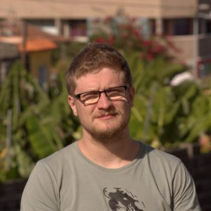
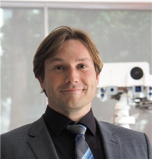
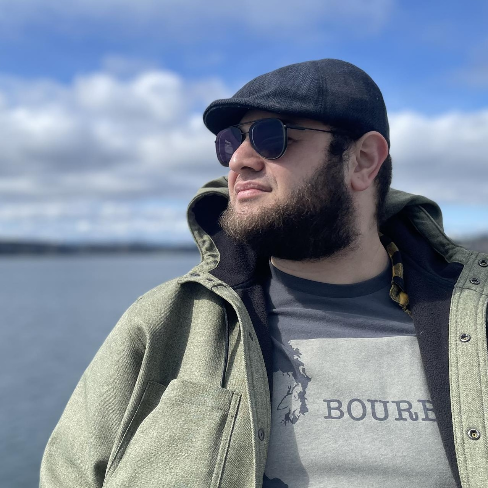
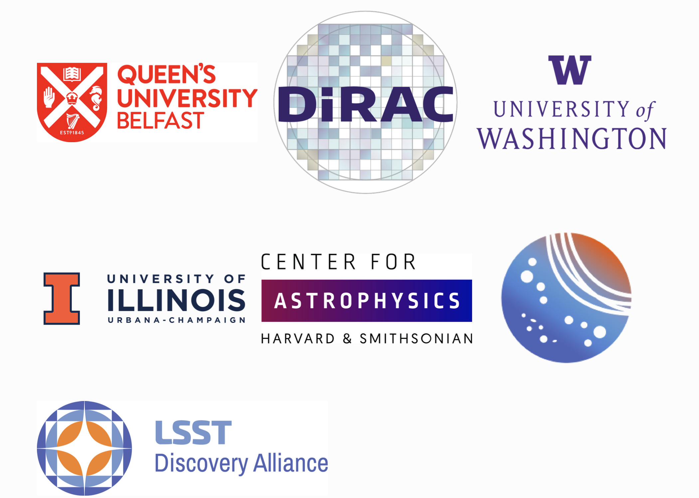

Inventorying the Solar System is one of the survey's four key science drivers
The Vera C. Rubin Observatory is currently finishing construction on Cerro Pachón, a mountain top in Chile. This next-generation facility is set to begin its 10-year Legacy Survey of Space and Time later this year. Equipped with the world's largest digital camera ever built (the 3200-megapixel LSST Camera covers 40 times the area of the full Moon in a single pointing), Rubin Observatory is expected to spend the next ten years covering over ~20,000 square degrees of the night sky.
This brand new observing facility is planned to take a total of ~2 million survey observations, split between 6 broad-band filters (ugrizy). Roughly every three nights, Rubin Observatory will scan the entire visible night sky from its vantage point on Cerro Pachón. The dataset produced will be effectively be a 10-year timelapse "movie" in technicolor of the changing universe and Solar System.
Inventorying the Solar System is one of the four key science drivers for the LSST.
The LSST will generate the largest catalog of known Solar System bodies, discovering and monitoring huge numbers of small Solar System objects over the next ten-years.
The Rubin Observatory is in the final stages of construction and commissioning. The LSST is expected to begin later this year when Rubin Observatory begins science operations.
Image Credit: Rubin Observatory/NSF/AURA/A. Pizarro D.
Over the next ten years, the Vera C. Rubin Observatory and the Legacy Survey of Space and Time (LSST) are going to completely transform our view of the Solar System.
Meg Schwamb
Queen's Univeristy Belfast
The small bodies, like asteroids and trans-Neptunian objects, residing in our Solar System are the materials left over after the era of planet building. The orbits, sizes, and compositions of these objects help astronomers peer into the Solar System's past and present. The LSST will give us an unparalleled opportunity to study the Solar System and our place in it.
Sorcha
Simulating what the LSST should find
Our team set out to accurately predict how many new Solar System objects would be discovered during the LSST, when these small bodies would be found, and how many observations each one would receive throughout the duration of the survey. A detailed understanding of the numbers and kinds of Solar System objects that will be discovered at different points in the 10-year survey can help astronomers get ready for the LSST and better plan follow-up observations with other facilities.
We have spent the last five years building Sorcha, a powerful software tool that simulates the LSST.
Sorcha predicts which of the objects in an input model (representing a population of Solar System planetoids with specified orbits, sizes, surface colors) should be "found" by the survey. Sorcha calculates the locations of the model orbits on-sky and figures out which of the model objects land within the survey images and would be bright enough to be detected by the Rubin Observatory's data analysis pipelines and Solar System moving object search pipeline. Sorcha uses a database of where the Rubin Observatory searched on the sky and the weather conditions during the LSST (or currently a simulation of where the survey pointed provided by Rubin Observatory), the properties of the LSST Camera, and properties of Rubin Observatory's software pipelines to figures out which of the input model objects should be found the survey.
Sorcha is built to handle the massive scale of LSST data, crucially allowing astronomers to compare model Solar Systems to the one we live in. Thanks to Sorcha, astronomers can Sorcha can predict what the "found" by the LSST would have found if the model represents the Solar System and compare the results to what was actually found by the survey In the future these simulated "surveys" can be compared to the real LSST. Using this technique, astronomers can adjust the input model parameters/distribution of model population's properties until the discoveries in the simulated version of the LSST mates matches the real LSST discoveries. This technique is very powerful, enabling estimates of the total number of objects, distribution
of orbits, sizes, rotational variability, and surface properties for any of the small body populations within the Solar System.
Sorcha is freely accessible to download and use. You can learn more about Sorcha here.
Video Credit: Meg Schwamb (QUB)

Grigori Fedorets
Finnish Centre for Astronomy with ESO, University of Turku & University of Helsinki
The population of small bodies is complex and variable throughout the Solar System. With Sorcha, we can accurately simulate and predict discoveries and brightnesses of small bodies in the Solar System regardless of their orbit

Siegfried Eggl
University of Illinois at Urbana-Champaign
Sorcha is a game changer, not only for predicting what LSST is likely to discover, but also for creating a baseline to compare actual observations with. This is essential when trying to understand if our observations match our understanding of the Solar System or if we have to modify our current models.
Results
What should the LSST discover and when?
Using our Sorcha Solar System survey simulator , we have taken the best estimate for how Rubin Observatory will observe over the next ten years and combined with the best models of several of the Solar System's main populations look like. We have estimates for the number of objects detected, the total number of observations (and in what optical filters important for composition studies), and estimates for the brightnesses of these objects in each of the simulated survey observsations. Our picture of the Solar System will completely change with the start of the LSST. Our analysis shows that the Rubin Observatory will be an unrivaled Solar System small body discovery and follow-up machine.
Using the best estimates for what the key Solar System populations look like and how the LSST will observe, we have predictions for:
Near-Earth objects (NEOs) are, as the name suggests, are small Solar System bodies that occasionally fly close to the Earth on their orbits. Some of them pose a threat to our planet. A continuous monitoring of their orbits and studying their composition with LSST is essential for the mitigation of the potential impact hazards.
Main-belt asteroids (MBAs) , situated between Mars and Jupiter, comprise the bulk of small Solar System objects. Their population not only hides the history of planetary interactions in the early days of the Solar System, but also unveils a widest variety of different surfaces shaped by collisions, gas outbursts and thermal forces.
Jupiter Trojans are asteroids that have become trapped through interactions with Jupiter's gravity. They are located along Jupiter's orbit and are found orbiting ahead or behind the giant planet.
Centaurs are on planet-crossing orbits between Jupiter and Neptune. Most Centaurs will eventually be ejected from the Solar System, but a few lucky ones will survive to become short-period comets. The LSST will provide the first detailed view of the Centaurs and the important transition stage from Centaur to comet.
Trans-Neptunian objects (TNOs) are found at the outskirts of the Solar System, starting from the orbit of Neptune, and beyond. Their orbital architecture is an imprint of the processes that have shaped the Solar System throughout its history and the orbits of the giant planets.
The Predictions by Numbers
Figure Credits: Image of Near-Earth asteroid Ryugu (Credit: JAXA, University of Tokyo, Kochi University, Rikkyo University, Nagoya University, Chiba Institute of Technology, Meiji University, Aizu University, AIST ); Image of asteroid Itokawa (credit: JAXA); Artist rendition of Centaur Chiron (Credit Flyazure); Images of Trans-Neptunian objects Pluto and Arrokoth (Credit: NASA/Johns Hopkins University Applied Physics Laboratory/Southwest Research Institute)
Where and When in the Solar System
Each flashing white dot in the visualization below is a predicted Solar System small body is expected to be discovered by the LSST based on our simulations. The color the points fade to shows what class of object (red NEOs, yellow MBAs, lavender Jupiter Trojans, and blue TNOs). The left plot is a bird's eye view of the Solar System looking downward at the plane of the Solar System. The view on the right is looking at the Solar System edge on.
This simulation assumed that the LSST would start in April of 2025. The current expected start date is mid-to-late Autumn of this year.
The Scale of the New Discoveries
Here we plot the total number of objects that we predict the Rubin Observatory to find during the LSST. The light purple are the expected new discoveries from Rubin Observatory. The dark purple are the small bodies known to date. The sheer number of main-belt asteroids observed is whopping compared to any of the other populations in the Solar System we looked at.
Let's zoom in to see the TNOs, MBAs, and NEOs
Let's zoom in to focus on the Centaurs
Over 10 years, Rubin is expected to quintuple the number of known Centaurs: from around 300 today to around 1,500. And around half of those will be discovered in just the first year of Rubin’s operations. With over 300 Centaurs expected
to have high-quality surface color measurements (thanks to the LSST's observations in multiple broad-band filters), we’re looking at a tenfold increase in just 10 years compared to the past 30 of scientific literature.
Discoveries Over Time Across the Sky
The figure below shows the locations of Solar System discoveries across the night sky. In the first two years we expect 70% of the surveys's small body discoveries! For Centaurs, it will take a bit longer (about 4 years), but 50% of Centaur discoveries will discovered after one full year of LSST data.
The bulk of the Solar System objects will be found around the ecliptic plane (the grey solid wave-likeline), the plane of the Earth's orbit about the Sun. The orbits of most of the Solar System's small bodies and planets tend to be aligned close to the ecliptic.
The Solar System in Technicolor
Beyond just discovering these objects, most of the small bodies found by Rubin Observatory during the LSST will be imaged multiple times and in multiple filters. Most previous surveys typically only have a few observations of each object in a single broad-band filter, and information about each object's color, which indicates its composition, comes from expensive follow-up campaigns using other telescopes for a limited number of targets. Rubin does this differently, taking multiple images of each object in each of the six broad-band filters, so that a large fraction of objects measured by Rubin will have high-quality color measurements, thus measuring more colors than all of Rubin's predecessors combined. This means that future studies of the Solar System will be able to combine the orbital history of each object with what each object is made of, leading to an unprecedentedly detailed view of the Solar System.
Jake Kurlander
University of Washington
The Rubin Observatory will take plenty of observations of millions of new Solar System objects. Now it’s up to us to take this data and extract new insights about the formation of our Solar System.
Joe Murtagh
Queen's Univeristy Belfast
We’ve shown the community just what to expect for the Centaurs in the age of Rubin, and in doing so have better prepared them to think about what data they need in order to bolster what the LSST can already give us. Rubin Observatory doesn’t just find Centaurs. It follows them.

Pedro Bernardinelli
University of Washington
The awesome thing about Rubin Observatory, as shown by our Sorcha simulations, is that we will not only discover so many new objects (almost 10x more than we know today in some populations!), but we’ll have so much information for any given object.
Our Results in Context
Learn More About the LSST Solar System Discovery Predictions From the Lead Authors
Jake Kurlander
Jake Kurlander, a graduate student at the University of Washington, is lead author on a paper accepted for publication in the
Astronomical Journal , estimating the number and rate of LSST discoveries for main observable small body populations within the Solar System: the
Near-Earth Objects, Main Belt Asteroids, Jupiter Trojans, and Trans-Neptunian Objects.
Joe Murtagh
Joe Murtagh, a graduate student at Queen's University Belfast, led a paper submitted ot the Astronomical Journal, exploring what LSST should find for the Centaurs. The Centaurs are
temporary residents of the Middle Solar System, as most orbits are
unstable and relatively short lived compared to the age of the Solar
System. This transitory population both provide insights into the life
cycle of Jupiter Family Comets as well as a view into the small sized
members of the Kuiper belt that are difficult to view beyond 30 au with
Earth-based telescopes.
Image credit: Murtagh et al (submitted) - Number of discovered LSST Centaurs (for three different orbital definitions of the region and including objects already previously known) over time. The symbols represent the 50% (open triangle), 80% (open square), and 90% (open circle) completion for each Centaur population definition.
Meg Schwamb
Queen's Univeristy Belfast
Developing a Solar System survey simulator for the LSST data rates was a challenge. From coming up with the algorithms, writing the source code, fixing bugs, breaking things during beta testing, and developing documentation, building Sorcha has truly been a team effort. Thanks to every team member's unique skill sets, experiences, and efforts we have produced an open-source Python package that we hope will become a community tool for interpreting Rubin Solar System data.
Team and Partners
Core Sorcha Team Members
This effort is a collaboration between Queen's University Belfast, the University of Washington's DiRAC Institute, the University of Illinois Urbana-Champaign, the Center for Astrophysics | Harvard & Smithsonian, and LINCC Frameworks (through the LINCC Frameworks
Incubator Program). All the contributors to Sorcha are acknowledged here.

LSST Interdisciplinary Network for Collaboration and Computing (LINCC) Frameworks- Building Tools for Big Data
LINCC Frameworks Incubators
The development of the Sorcha survey simulator was made possible thanks to the LSST Discovery Alliance's LINCC Frameworks Incubator program, supported by Schmidt Sciences. The Incubator program pairs software engineers with research teams to develop software tools ready to handle the upcoming scale of the LSST data. Sorcha was selected as one of two inagural incubators in 2023.
Science and Technology Facilities Council (STFC) grants ST/P000304/1, ST/V000691/1, ST/X001253/1, and ST/V506990/1
Horizon 2020 Marie Skłodowska-Curie Postdoctoral Fellowship
Preparing for Astrophysics with LSST Program, funded by the Heising Simons Foundation through grant 2021-2975, and administered by Las Cumbres Observatory
LSST Discovery Alliance LINCC Frameworks Incubator grant [2023-SFF-LFI-01-Schwamb]. Support was provided by Schmidt Sciences.
University of Washington College of Arts and Sciences, Department of Astronomy, and the DiRAC (Data-intensive Research in Astrophysics and Cosmology) Institute. The DiRAC Institute is supported through generous gifts from the Charles and Lisa Simonyi Fund for Arts and Sciences and the Washington Research Foundation
Washington Research Foundation Data Science Term Chair fund and the University of Washington Provost's Initiative in Data-Intensive Discovery.
Department for the Economy (DfE) Northern Ireland postgraduate studentship scheme
National Science Foundation through the following awards: Collaborative Research: SWIFT-SAT: Minimizing Science Impact on LSST and Observatories Worldwide through Accurate Predictions of Satellite Position and Optical Brightness NSF Award Number: 2332736 and Collaborative Research: Rubin Rocks: Enabling near-Earth asteroid science with LSST NSF Award Number: 2307570
Travel funding from the STFC for UK participation in LSST through STFC grant ST/S006206/1
Several functions within Sorcha were adapted from code originally developed for rubin_sim, We thank the Vera C. Rubin Observatory Data Management Team and Scheduler Team for making their software open-source. Development of rubin_sims supported in part by the National Science
Foundation through Cooperative Agreement AST-1258333 and Cooperative Support Agreement AST1836783 managed by the Association of Universities for Research in Astronomy (AURA), and the Department of Energy under Contract No. DE-AC02-76SF00515 with the SLAC National Accelerator Laboratory managed by Stanford University.
Simulation Output
Simulated LSST Solar System Detection Catalogs
Click here for the NEO, MBA, Jupiter Trojan, and TNO input populations and output detection catalogs from Kurlander et al (in press) simulated against the baseline v3.4 rubinsim cadence simulation.
Please read the papers for further details about how the simulated catalogs were generated and for caveats to be mindful of before starting your analysis. We thank the Rubin Observatory Scheduler Team for generating the survey strategy observing cadence simulations and for sharing them with the research community. We thank the Canadian Advanced Network for Astronomical Research for hosting this repository.